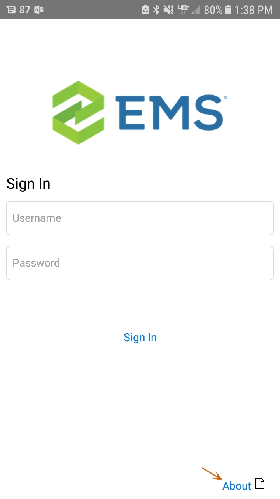
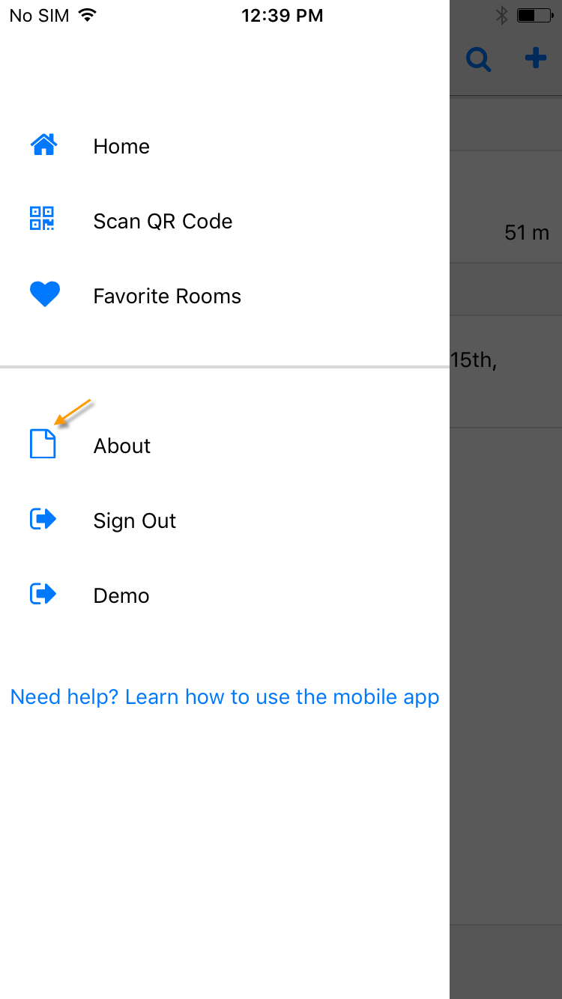
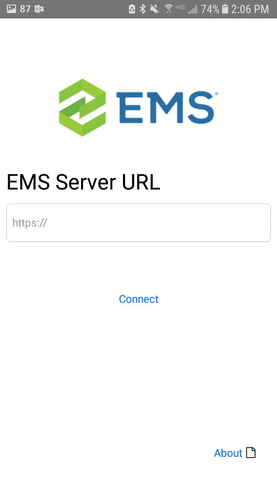

- From the Sign in screen, tap About in the lower right-hand corner, or after signing in, tap on the menu and navigate to the About screen.
Tab About from Sign In Screen Tap About from Main Menu   - From the About screen, the API URL is listed under Change API URL. To change the API URL, tap the API URL address. The Server URL screen will appear.

- Enter your server URL in the field and tap Connect. Check with your Administrator for the correct URL.
